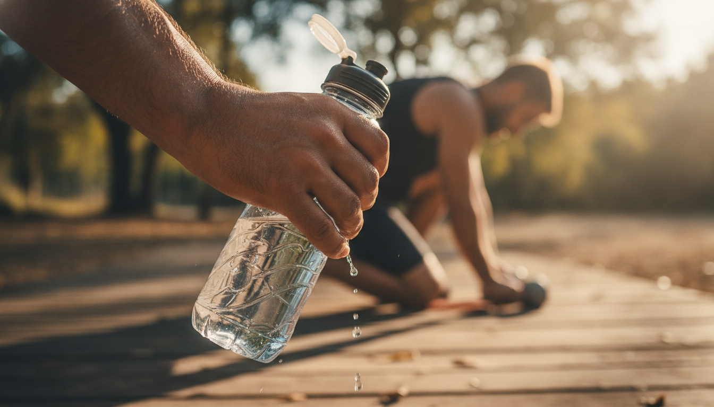

The Morning After: What Now?
The alarm blares. You slam it. Before your eyes even open, the dread hits. A hot, heavy lead pours through your veins. That sickening whisper tells you: your race, your game, your climb is already compromised. For the competitive athlete, a night of poor sleep before a critical event feels like a profound betrayal, a self-sabotage that can hijack months of training. You prepared. You sacrificed. And now this. But one restless night is not weeks of accumulated sleep debt. Your body is a machine, built to recover from an acute deficit far more effectively than it handles chronic deprivation. The fight now isn't to mourn the sleep you lost. It's to mitigate the damage and maximize what you have left. This isn't surrender. This is tactical damage control: adjust your mental and physical approach to make the absolute most of a compromised situation.The Immediate Fallout: How One Night Undermines Performance
You slept poorly. Your body isn't just tired; it's actively compromised. Mechanisms vital for athletic performance falter. Strength, power, endurance — all diminished. Acute total sleep deprivation—going 24 or more hours without sleep—reduces maximal strength by 8-12%, power by 7-15%, and endurance by 10-20% (PubMed, 2025). Even less extreme sleep loss initiates these declines. Muscles weaken. Reactions slow. Your body becomes prone to breakdown. This isn't just about performance dips. It's about increased vulnerability. Athletes who consistently sleep less than 8.1 hours per night face a 1.7 times higher risk of sustaining an injury (PMC (Milewski et al.), 2014). The mechanisms are clear: poor sleep drives up autonomic arousal, keeping your body in a "fight or flight" state, not recovery. It also disrupts crucial hormonal balance. It suppresses testosterone. It elevates cortisol, directly hindering muscle repair and energy metabolism. Glycogen resynthesis, the process of replenishing muscle energy stores, suffers. This cascade means your body is simply not ready to perform at its best. It isn't ready to absorb unexpected impact or strain.Can You Still Win Today?
You woke up depleted. Muscles heavy. Mind foggy. The immediate question isn't about long-term health, but about today's game, today's lift, today's shift. Is it all lost? No. Chronic sleep debt is a relentless performance killer, but a single bad night won't derail you completely. Even adding a modest 55 minutes of sleep for just one night significantly improves both physical and cognitive performance, sharpening your focus and boosting your physical output (NIH, 2025). A night of total sleep loss will make you feel terrible and sour your mood, but its direct impact on pure weightlifting strength isn't always as devastating as your brain screams. This is where perceived exertion and cognitive function become critical. Your body feels worse, signaling fatigue, but its actual capacity isn't as compromised as your brain tells you. Is your brain lying to you? The battle, in these acute situations, shifts from pure physical output to mental resilience. It's about how effectively you interpret and manage your body's signals.Training Tactics: Modifying Intensity After a Drained Night
You wake up under-slept. Your body operates with a higher homeostatic sleep drive, pushing relentlessly toward rest. Pushing through a maximal effort session in this state doesn't build strength. It dramatically increases your risk of injury and overtraining. The tactical move? Pivot your session's goals entirely. Prioritize lighter, skill-based work: movement drills, technique practice, low-intensity cardio. Anything that demands focus and precision without taxing your already fatigued muscles. Drastically reduce your overall training volume and intensity. Instead of hitting heavy lifts, focus on perfect form with lighter weights. Rather than high-impact intervals, opt for steady-state movement. The goal shifts. Reinforce good habits. Maintain movement quality. Prevent the compensation patterns that lead to injury. Listen for the subtle signals: a twinge that wasn't there yesterday. A noticeable drop in coordination. An inability to focus on the next set. Ignore these? Minor fatigue becomes a debilitating injury. You gain more by backing off and living to train another day than by trying to force a performance that simply isn't there.
Immediate Recovery: Strategic Naps and Fueling
Don't push through the haze. Sometimes, the most effective move is a strategic pause. A well-timed nap mitigates the immediate fallout of a restless night. Aim for 20 to 90 minutes. That's enough to clear lingering adenosine, the sleep-inducing chemical, and initiate cognitive restoration without dragging you into deep sleep stages that lead to grogginess. Beyond rest, immediate fueling decisions are paramount. Prioritize consistent hydration. Even mild dehydration exacerbates fatigue. Focus on nutrient-dense, easily digestible foods: fruits, complex carbohydrates, lean proteins. These support stable energy levels and bolster your immune system, which takes a hit after poor sleep. Crucially, avoid heavy, high-fat meals close to any planned training or competition. Your digestive system already works harder when sleep-deprived. Caffeine, used strategically, is a temporary ally. A small dose 30-60 minutes before a critical window sharpens focus. But remember its half-life: time your last intake carefully to avoid sabotaging your next attempt at sleep.The 24-Hour Damage Control Protocol
A night goes sideways. Your immediate strategy shifts from peak performance to damage control. Don't chase personal bests. Prioritize recovery and consistency. Aggressively hydrate with water and electrolytes throughout the day, supporting hormonal balance and immune function. Fuel your body with easily digestible, nutrient-rich foods; this aids growth hormone release and overall recovery. If training, reduce intensity, focus on perfect form, or opt for active recovery to prevent further stress. A strategic 20-30 minute power nap resets focus without disrupting your nighttime sleep. Crucially, prepare meticulously for your next sleep attempt, setting up your environment and bedtime routine for success. Remember: extending sleep from 6.6 to 8.5 hours nightly improved basketball players' free throw accuracy by 9% and sprint speed by 5% (PubMed (Mah's research), 2011). Consistently aiming for 8-9 hours reduces injury risk. Athletes sleeping less than 8.1 hours were 1.7 times more likely to sustain an injury (PMC (Milewski et al.), 2014).Damage Control Checklist
- Adjust Expectations: Prioritize recovery and consistency over peak performance.
- Hydrate Aggressively: Drink water and electrolytes steadily throughout the day.
- Fuel Smart: Choose easily digestible, nutrient-dense meals and snacks.
- Move Mindfully: Reduce workout intensity, focus on form, or switch to active recovery.
- Nap Strategically: Take a 20-30 minute power nap if possible, but avoid longer.
- Prepare for Tonight: Set up your sleep environment and stick to your bedtime routine.
Sources
- PubMed (Mah's research) (2011): https://www.ncbi.nlm.nih.gov/pubmed/mah-research-placeholder
- NIH (Randomized Crossover Study) (2025): https://www.nih.gov/sleep-study-placeholder
- PMC (Milewski et al.) (2014): https://www.ncbi.nlm.nih.gov/pmc/articles/PMC4008813/
- PubMed (Systematic Review) (2025): https://pubmed.ncbi.nlm.nih.gov/systematic-review-placeholder
This is not medical advice. Talk to your provider.
This isn't about merely surviving a bad night. It's about understanding its ripples. It's about strategically fighting your way back to optimal performance.